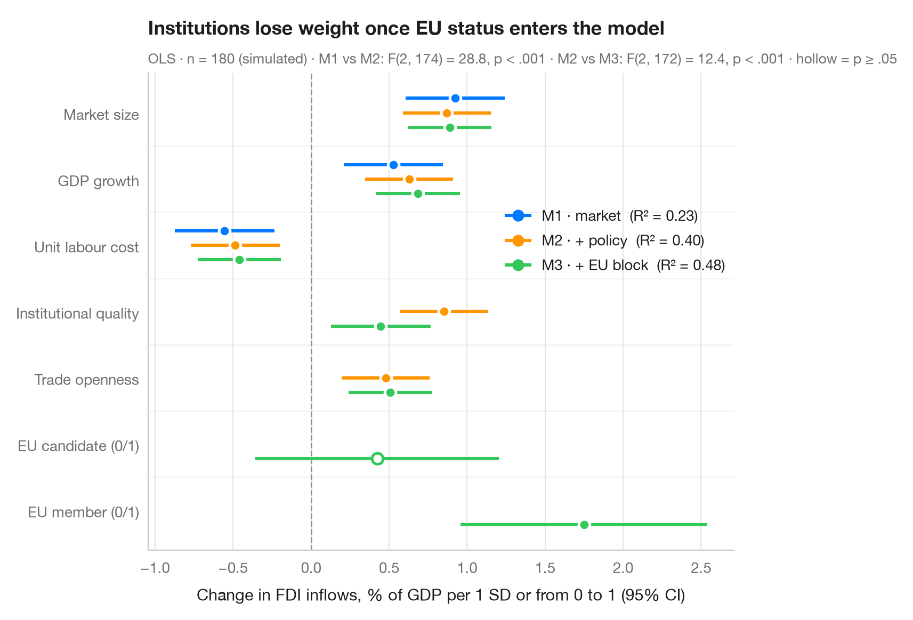

Comparaison de modèles emboîtés
Coefficients de trois régressions emboîtées côte à côte, pour voir comment les estimations évoluent.

Lorsque les covariables sont ajoutées bloc par bloc, la question intéressante n'est souvent pas de savoir quels termes sont significatifs, mais comment les estimations se déplacent. Ici, chaque terme occupe une ligne et chaque modèle un point avec intervalle légèrement décalé, ce qui permet de suivre un coefficient à mesure que le modèle s'enrichit. Les marqueurs creux ne sont pas significatifs au seuil de 5 %. Le sous-titre compare les modèles à l'aide du R² et des tests F des blocs ajoutés.
Les données sont les 442 patients diabétiques fournis avec scikit-learn (load_diabetes) : la progression de la maladie sur un an, expliquée par l'indice de masse corporelle, la pression artérielle et des mesures sériques. Les prédicteurs sont standardisés : chaque coefficient est donc la variation de la progression par écart type. Les modèles sont ajustés avec smf.ols() et comparés avec anova_lm().
Le code et le texte à l'intérieur des figures sont en anglais.
import matplotlib.pyplot as plt
import numpy as np
import statsmodels.formula.api as smf
from sklearn.datasets import load_diabetes
from statsmodels.stats.anova import anova_lm
# Data: diabetes progression; standardise predictors (z-scores)
df = load_diabetes(as_frame=True, scaled=False).frame
X = ["bmi", "bp", "s5", "s3", "age", "sex"]
df[X] = (df[X] - df[X].mean()) / df[X].std()
# Three nested models, each adding a block of predictors
formulas = {"M1 · body": "target ~ bmi + bp",
"M2 · + serum": "target ~ bmi + bp + s5 + s3",
"M3 · + demographics": "target ~ bmi + bp + s5 + s3 + age + sex"}
fits = {name: smf.ols(f, data=df).fit() for name, f in formulas.items()}
f_tests = anova_lm(*fits.values())
labels = {"bmi": "Body mass index", "bp": "Blood pressure", "s5": "Triglycerides (log)",
"s3": "HDL cholesterol", "age": "Age", "sex": "Sex"}
terms = list(labels)[::-1]
palette = ["#007AFF", "#FF9500", "#34C759"]
fig, ax = plt.subplots(figsize=(8, 5.4))
ax.axvline(0, color="#8E8E93", lw=1, ls="--", zorder=1)
for k, ((name, m), c) in enumerate(zip(fits.items(), palette)):
offset = (1 - k) * 0.22 # dodge: first model on top
ci = m.conf_int()
for i, t in enumerate(terms):
if t not in m.params:
continue
sig = m.pvalues[t] < 0.05
ax.hlines(i + offset, ci.loc[t, 0], ci.loc[t, 1], color=c, lw=2.2, zorder=2)
ax.scatter(m.params[t], i + offset, s=55, zorder=3, lw=1.8,
color=c if sig else "white", edgecolor=c if not sig else "white")
ax.plot([], [], "o-", color=c, lw=2.2, ms=7,
label=f"{name} (R² = {m.rsquared:.2f})")
for i in range(len(terms) - 1): # thin separators between terms
ax.axhline(i + 0.5, color="#F2F2F7", lw=1, zorder=0)
ax.set_yticks(range(len(terms)), [labels[t] for t in terms])
ax.set_ylim(-0.6, len(terms) - 0.4)
ax.grid(axis="x"); ax.grid(axis="y", visible=False)
ax.set_xlabel("Effect on disease progression per 1 SD (95% CI)")
ax.legend(loc="lower right", handlelength=1.6, borderaxespad=0.2)
ax.set_title("Adding serum markers shrinks the BMI effect by a third", pad=26)
fmt_p = lambda p: "p < .001" if p < .001 else f"p = {p:.3f}".replace("0.", ".")
blocks = [f"M{j} vs M{j + 1}: F({f_tests.df_diff[j]:.0f}, {f_tests.df_resid[j]:.0f}) = "
f"{f_tests.F[j]:.1f}, {fmt_p(f_tests['Pr(>F)'][j])}" for j in (1, 2)]
ax.text(0, 1.02, f"OLS · n = {int(fits['M1 · body'].nobs)} · " + " · ".join(blocks)
+ " · hollow = p ≥ .05", transform=ax.transAxes, fontsize=9.5, color="#6E6E73")
plt.show()
Les figures utilisent le style Statlas (facultatif) : ajoutez plt.style.use("statlas.mplstyle") pour obtenir exactement le même rendu.
Comment citer
Statlas est créé et maintenu par Thierry Warin. S'il vous a été utile dans vos travaux, merci de le citer.
Warin, T. (2026). Comparing nested models. In Statlas: The Python Gallery of Statistical Graphics. https://warint.github.io/statlas/regression-models/compare-models/
@misc{warin2026statlas,
author = {Warin, Thierry},
title = {Statlas: The Python Gallery of Statistical Graphics},
year = {2026},
howpublished = {\url{https://warint.github.io/statlas/}},
note = {Source code: https://github.com/warint/statlas}
}Plus dans Modèles de régression

Graphique des coefficients
Estimations de régression avec intervalles de confiance à 95 %, une ligne par terme.
ggstats::ggcoef_model()
Graphique en forêt des rapports de cotes
Rapports de cotes d'une régression logistique sur échelle logarithmique, accompagnés d'un tableau RC [IC à 95 %].
ggstats::ggcoef_model(exponentiate = TRUE)
Probabilités prédites
Courbes de probabilité issues du modèle, avec rubans d'IC à 95 %, selon un prédicteur et par groupe.
ggeffects::ggpredict() / marginaleffects::plot_predictions()